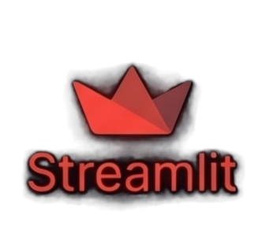

Streamlit is an open-source Python framework that lets data scientists and machine learning engineers build interactive web applications with nothing but Python — no HTML, no CSS, no JavaScript. Founded in 2018 and acquired by Snowflake in 2022, it's now used by companies from Uber to NASA. This page covers its origin, how it actually runs, what people build with it, and where to learn it properly.

The three co-founders didn't meet at a startup weekend. They met at one of the most secretive research labs in the world — and the problem they set out to solve was one they'd all experienced firsthand.
Adrien Treuille, Thiago Teixeira, and Amanda Kelly first worked together at Google X around 2012. Years later, Treuille — who had gone on to roles at Carnegie Mellon University and the self-driving startup Zoox — kept bumping into the same wall: as a machine learning engineer, he could build powerful models quickly in Python, but sharing those insights with colleagues required engineering another team to build a web interface, which could take months. Late in 2017 he started building tools for himself to solve this. He showed the prototype to Teixeira, who immediately understood it, and the two began coding the early version together in spring 2018. Kelly, who had operational experience from Google and HelloFresh, joined as co-founder — initially while seven months pregnant, and despite saying no the first time Treuille asked.
The company was incorporated in late 2018 in San Francisco, and Gradient Ventures (Google's AI-focused fund) and GGV Capital co-led a $6 million seed round. The product spent 2018–2019 in a private beta, quietly proving itself with early adopters. Then, in October 2019, Streamlit launched publicly as an open-source library on GitHub. The community reaction was immediate — the repo hit 5,000 GitHub stars by the end of 2019 and 10,000 stars by October 2020. Within nine months of launch, over 200,000 apps had been built with it and it had been downloaded more than 300,000 times.
Investment followed the traction: a $21 million Series A in June 2020 (led again by Gradient Ventures and GGV), and a $35 million Series B in April 2021, led by Sequoia Capital. The Series B brought total funding to $62 million. By 2021, Streamlit had landed inside more than half the Fortune 50. In March 2022, Snowflake announced its acquisition of Streamlit for approximately $800 million — one of the largest acquisitions in the data tools space — while committing to keep the project open source.
Streamlit's execution model is deliberately different from other frameworks — and that difference is what makes it so simple to use.
Traditional web frameworks separate the application into a front-end (HTML/CSS/JS) that handles user interaction and a back-end API that processes data. Building anything interactive requires carefully wiring these two halves together. Streamlit throws away the distinction entirely: your Python file is the entire app. Every time a user interacts with a widget — moves a slider, clicks a button, types in a text box — Streamlit simply re-runs the entire script from top to bottom, recalculating outputs with the new inputs.
This sounds expensive, but Streamlit uses smart caching decorators (@st.cache_data, @st.cache_resource) to skip re-executing functions whose inputs haven't changed — so loading a model or querying a database only happens once, not on every interaction.
Every widget interaction triggers a full script re-run. Streamlit tracks widget state between runs, so functions decorated with @st.cache_data only re-execute when their inputs change — making even heavy ML models respond quickly.
The Swiss-army-knife output command — automatically renders text, DataFrames, charts, images, or any Python object.
One-liners for sliders, text inputs, dropdowns, file uploaders, buttons, and more — each returns a Python value directly.
Decorator to memoize expensive function calls (DB queries, file reads) so they skip re-execution when inputs haven't changed.
A dictionary persisting values across re-runs, needed for multi-step flows like chatbot history or form wizards.
st.columns(), st.tabs(), st.expander(), and st.sidebar() let you arrange content without any CSS grid knowledge.
One-click deploy directly from a GitHub repository — free tier available, apps live at a public URL within minutes.
Streamlit's sweet spot is anywhere a data scientist, ML engineer, or analyst needs to share their Python work with people who aren't going to run Python themselves.
Load a trained model, add a file-upload widget and a predict button — stakeholders can test the model without touching code or a notebook.
The most common enterprise use case — replace a static PDF report with a live, filterable dashboard that non-technical colleagues can drive.
Since 2023, Streamlit's st.chat_message() and st.chat_input() have made it the go-to quick-build UI for LangChain, OpenAI, and Hugging Face demos.
Drop in a DataFrame, add sliders and filters, and give analysts a visual tool for slicing and exploring raw data without SQL or BI tools.
Used by NASA, the World Health Organization, and universities for interactive visualizations of experimental results and geospatial data.
Stand up a working prototype of a product idea in hours to test with users before committing to a full front-end build.
Streamlit is not the only Python-to-app tool — understanding its trade-offs helps you pick the right one.
| Framework | Language | Learning curve | Customisation | Best for |
|---|---|---|---|---|
| Streamlit | Python only | Very low | Moderate | Data science, ML demos, AI chatbots |
| Dash (Plotly) | Python (+ React) | Medium | High | Complex interactive analytics dashboards |
| Gradio | Python only | Very low | Limited | Quick ML model demos, Hugging Face Spaces |
| Panel | Python | Medium | High | Complex notebooks-to-apps workflows |
| Flask / FastAPI + React | Python + JS | High | Full control | Production, polished user-facing products |
Streamlit's documentation is excellent and the community is one of the most active in the Python data ecosystem.
The official, comprehensive reference — includes a 30-minute quickstart, API reference, and cookbooks.
Hundreds of live, open-source apps — the fastest way to see what's possible and learn by reading real code.
An official, bite-sized 30-day challenge covering one concept per day from first widget to deployment.
A guided Coursera project walking through building and deploying a real data app with Streamlit.
The official forum — highly active, with the core team answering questions alongside thousands of community members.
Tutorials, demos, and community spotlights from the Streamlit team and developer advocates.